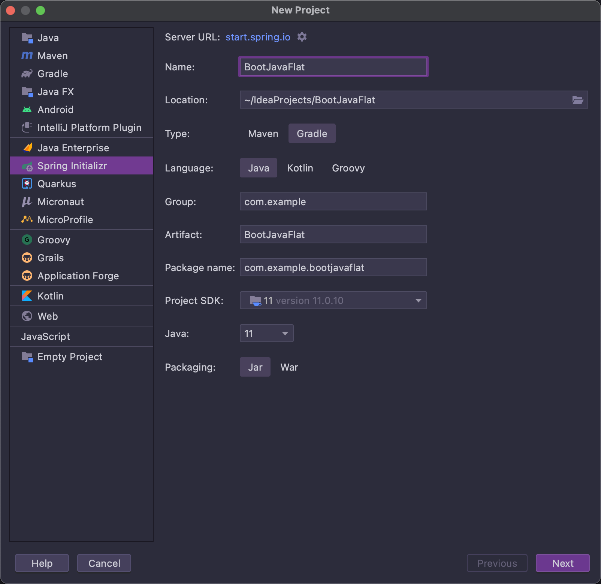
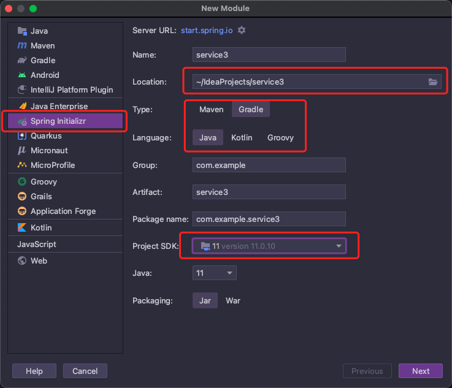
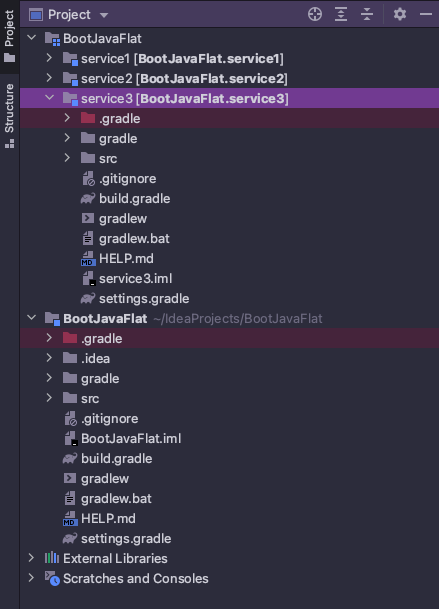
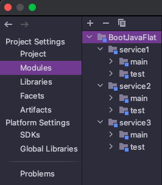
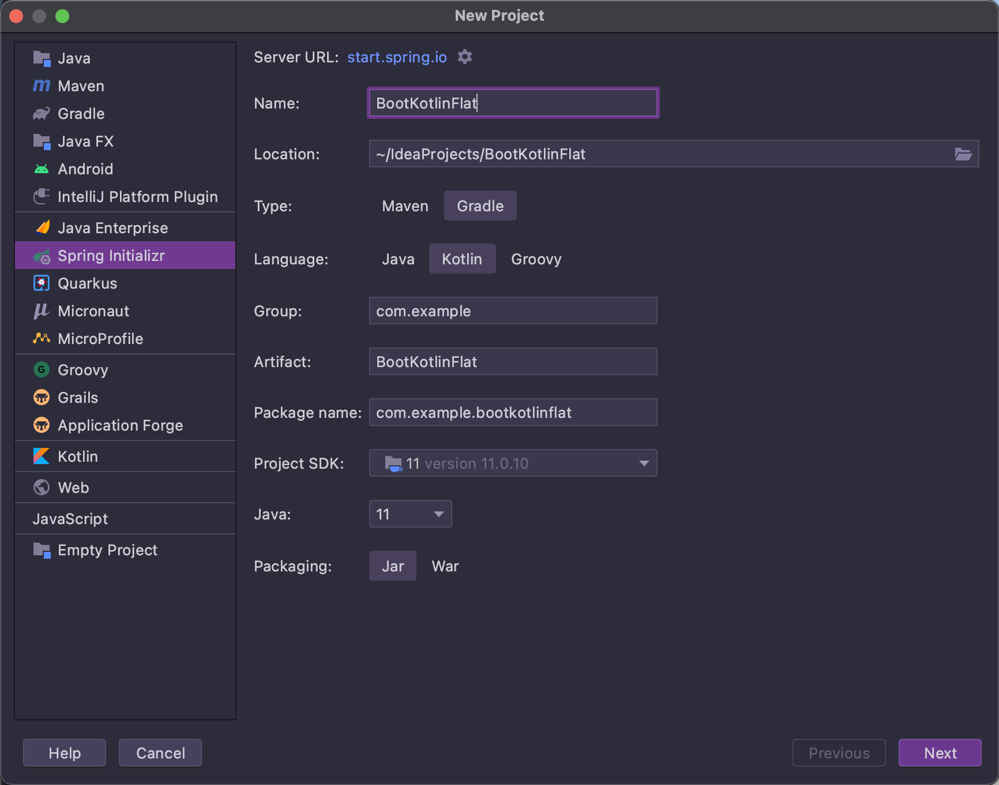
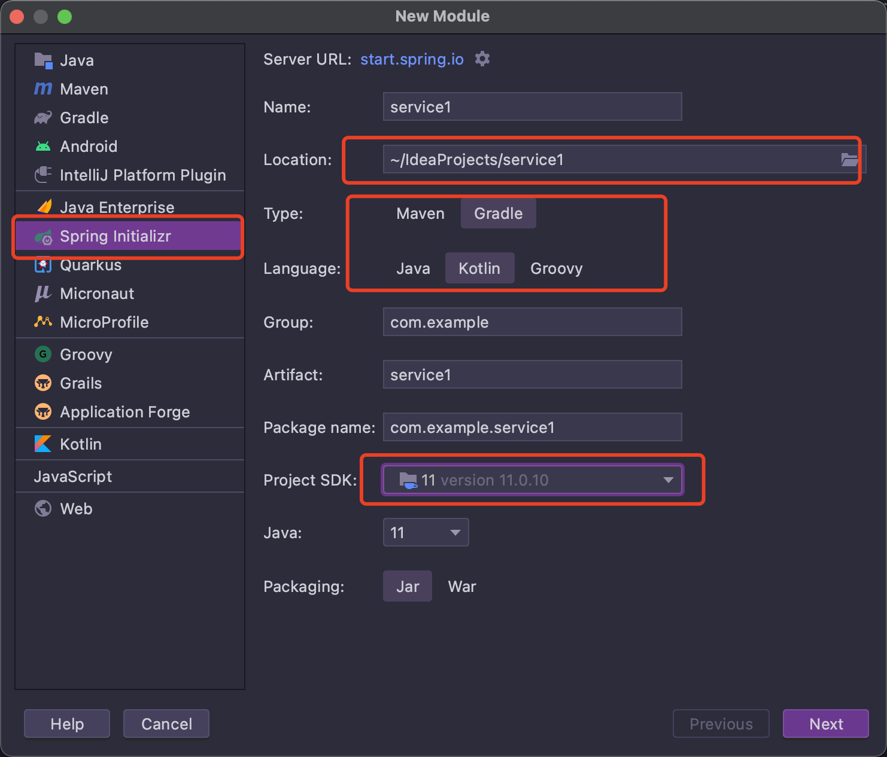

扁平化布局 在上一篇的例子中，达到的效果其实是将一个项目的多个层拆分为多个单独的模块，比如 web 层，service 层，dao 层。
本篇要做到的效果是同时存在多个独立的项目，每个项目自身都是一个完整的 web 结构，而根项目主要负责统一各个子项目的依赖包的版本。当然子项目之间也可以引用，例如有一个 common 包单独作为一个子项目。
另外，要做到各个子项目的目录在根项目的同一级而不是下一级，这就是扁平化布局。
Java+GroovyDSL 创建根项目 
与上一篇类似，这里用 IDEA 的 spring initializr 创建，选择 gradle、java、JDK11.
创建子项目 右键点击根项目名，选择 new->module，如图：

这里就要注意，与前一篇不同，在根项目右键点击 new->module 后，要选择使用 spring initializr，并将项目路径手动调整到与根项目目录平级，JDK 也需要手动指定，这样在创建完毕后，其实相当于创建了一个完全独立的项目。
这里创建了三个示例子项目，分别是 service1、service2、service3.
修改配置文件
删除根项目的 src 目录，修改根项目的 build.gradle 文件，加入 subprojects 块并改写 apply plugins 语句。另外还要注意，必须在 subprojects 块中添加 repositories 块，最终结果形如：
1 2 3 4 5 6 7 8 9 10 11 12 13 14 15 16 17 18 19 20 21 22 23 24 25 subprojects { apply plugin: 'org.springframework.boot' apply plugin: 'io.spring.dependency-management' apply plugin: 'java' repositories { mavenCentral() jcenter() } dependencies { implementation 'org.springframework.boot:spring-boot-starter-web' compileOnly 'org.projectlombok:lombok' runtimeOnly 'com.h2database:h2' runtimeOnly 'org.postgresql:postgresql' annotationProcessor 'org.projectlombok:lombok' testImplementation 'org.springframework.boot:spring-boot-starter-test' } test { useJUnitPlatform() } }
注意这里务必不要缺少 repositories 块 ，否则在后面子项目单独引入依赖时会报错，其原因是因为识别不到远端仓库而不知道去哪里下载依赖。
修改所有子项目的 build.gradle 文件，删除除了 dependencies 块之外的所有部分：
这里的依赖后面会单独进行整理。
修改所有子项目的 setting.gradle 文件，将其内容改为：
1 rootProject.name = 'BootJavaFlat'
这里的 BootJavaFlat 即根项目名。
修改根项目的 setting.gradle 文件，将其内容改为：
1 2 3 4 5 6 rootProject.name = 'BootJavaFlat' includeFlat( 'service1' , 'service2' , 'service3' )
注意这里的includeFlat指令，这个指令是专门用来创建这种扁平化布局的项目结构的，与之对比，上一篇中使用的是include，创建的是嵌套的目录结构。
使用 IDEA 的 gradle 视图进行刷新，在左侧项目目录视图中得到如图的结构：

检查项目的模块关系，在 IDEA 的 project structure 视图中检查，如果有多余的模块则删除，正确的结构如下：

注意这里的模块结构关系显示为层级式的，所有子项目都是根项目的下一级。虽然在文件结构目录上它们是同级的（扁平化布局），但是在模块关系上应该被识别为层级关系才是正确的。这里如果也是同级别的话，子项目在构建时会被作为一个单独的项目处理，其配置就是不完整的（因为有一部分在根项目中，相当于缺了一部分），会导致子项目构建报错。
整理依赖 到上一步结束，扁平化的项目结构就已经搭建完毕。这时除了子项目的依赖包的版本被根项目约束之外，各个子项目之间是相互独立的，不存在互相依赖的关系，每个子项目自身都是一个完整的 web 项目，可以分别同步到不同的 git 仓库进行版本控制。
在实践中，每个子项目内部的依赖都是有一些差别的，不同的项目其技术选型可能不同，比如，有的项目使用了 mybatis，而有的项目使用了 spring data jpa，或者有的项目使用 logback，而有的项目使用 log4j，更有甚者，有的项目使用 spring webmvc 技术栈，而有的项目则使用 spring webflux 技术栈。所以各个子项目之间的依赖很有可能并不是一致的，甚至可能是互相不兼容的，这就需要将依赖关系进行整理，如果一个依赖包是所有子项目共用的，那么就把它放在根项目中，而如果是子项目单独使用的，则将其放到子项目自己的 build.gradle 中。
于是继续对上面的配置文件进行修改，在根项目配置文件中，检查 subprojects 块中的 dependencies 块，只保留公共依赖。比如这里删掉所有的依赖，包括 test 块，全部留给子项目自主引入，最后根项目的 subprojects 就只剩下：
1 2 3 4 5 6 7 8 9 10 11 12 subprojects { apply plugin: 'org.springframework.boot' apply plugin: 'io.spring.dependency-management' apply plugin: 'java' repositories { mavenCentral() jcenter() } }
同时，在各子项目中单独引入依赖，如下：
1 2 3 4 5 6 7 8 9 10 11 12 13 14 15 16 17 18 19 20 21 22 23 24 25 26 27 28 29 30 31 32 33 34 35 36 37 38 39 40 41 42 # service1 dependencies { implementation 'org.springframework.boot:spring-boot-starter-web' compileOnly 'org.projectlombok:lombok' runtimeOnly 'com.h2database:h2' runtimeOnly 'org.postgresql:postgresql' annotationProcessor 'org.projectlombok:lombok' testImplementation 'org.springframework.boot:spring-boot-starter-test' } test { useJUnitPlatform() } #service2 dependencies { implementation 'org.springframework.boot:spring-boot-starter-web' compileOnly 'org.projectlombok:lombok' runtimeOnly 'com.h2database:h2' runtimeOnly 'org.postgresql:postgresql' annotationProcessor 'org.projectlombok:lombok' testImplementation 'org.springframework.boot:spring-boot-starter-test' } test { useJUnitPlatform() } # service3 dependencies { implementation 'org.springframework.boot:spring-boot-starter-data-mongodb-reactive' implementation 'org.springframework.boot:spring-boot-starter-data-redis-reactive' implementation 'org.springframework.boot:spring-boot-starter-webflux' compileOnly 'org.projectlombok:lombok' annotationProcessor 'org.projectlombok:lombok' testImplementation 'org.springframework.boot:spring-boot-starter-test' testImplementation 'io.projectreactor:reactor-test' } test { useJUnitPlatform() }
示例中 service3 就使用了与另两个子项目不同的 webflux 技术栈，导致它们的依赖不相容，所以不能在根项目中配置。
Kotlin+KotlinDSL 创建根项目 
创建子项目 
修改配置文件
删除根项目的src目录，向build.gradle.kts添加subprojects。这里直接整理了依赖
1 2 3 4 5 6 7 8 9 10 11 12 13 14 15 16 17 18 19 20 21 22 23 24 25 26 27 28 29 30 31 32 33 34 35 36 subprojects { apply { plugin("org.springframework.boot" ) plugin("io.spring.dependency-management" ) plugin("org.jetbrains.kotlin.plugin.spring" ) plugin("org.jetbrains.kotlin.jvm" ) } repositories { mavenCentral() jcenter() } <!-- dependencies { implementation("org.springframework.boot:spring-boot-starter-web" ) implementation("com.fasterxml.jackson.module:jackson-module-kotlin" ) implementation("org.jetbrains.kotlin:kotlin-reflect" ) implementation("org.jetbrains.kotlin:kotlin-stdlib-jdk8" ) runtimeOnly("com.h2database:h2" ) runtimeOnly("org.postgresql:postgresql" ) testImplementation("org.springframework.boot:spring-boot-starter-test" ) } tasks.withType<KotlinCompile> { kotlinOptions { freeCompilerArgs = listOf("-Xjsr305=strict" ) jvmTarget = "11" } } tasks.withType<Test> { useJUnitPlatform() } --> }
未完成。。。。
https://docs.gradle.org/current/userguide/kotlin_dsl.html#sec:multi_project_builds